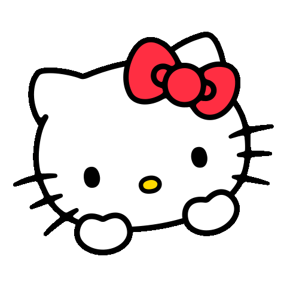

📚 9th Grade:I Asked Saumya about her mask.And ig that was the tiny start of everything.
Macchar gng back then 😂💔: maccha gng name was given by me to their friend group consisting of Rhythm, Sanya & Sumehra. Slowly i got her Snapchat then Insta (after months of begging 😂💔🫃).
baat cheet: 10th grade came and i found myself talking more with her and we got super close. Rhythm & Sanya drifted away became our roast material. Peppa Pig 🐷
Spit Incident 💦: Made her laugh so bad she spit on my face. Legendary.
Late Night Talks: Summer break — nights full of talks, secrets, exploring each other’s lore.getting more and more closer.
Food Fest: Stood in the longest line just to get her food. No regrets.
Last School Days: Preboards were near i was shifting to another place basically these were out last days at school together she drew uwu on my hands daily.used to come on Saturdays for her only ans i was defaulter every time 💔.
nosey moment : She laughed so hard once, her nose ran down 😭.
Preboards ➜ Boards: Failed maths in preboards but survived boards together. (Boards ended on 13 May 2024!)
Moved Away: Shifted to another place but daily talks never paused.
11th Grade: Both took Humanities. Vibes same, bond stronger.
First offline out of school Meet: Met at Pacific Mall with Sumehra. She looked perfect as always, fun day!
Second Meet: Bought them Hot Wheels, gifted a Kuromi keychain, won Kinder Joy. W day .
Reddit lund 😂💔: Got too addicted, realised, deleted. More time for her.
Now(23rd june) & Next: Still daily talks, more memories to come. Next meet: 28th! 🗓️✨
